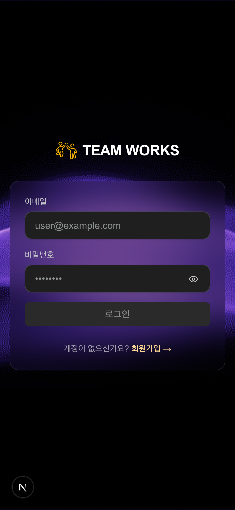
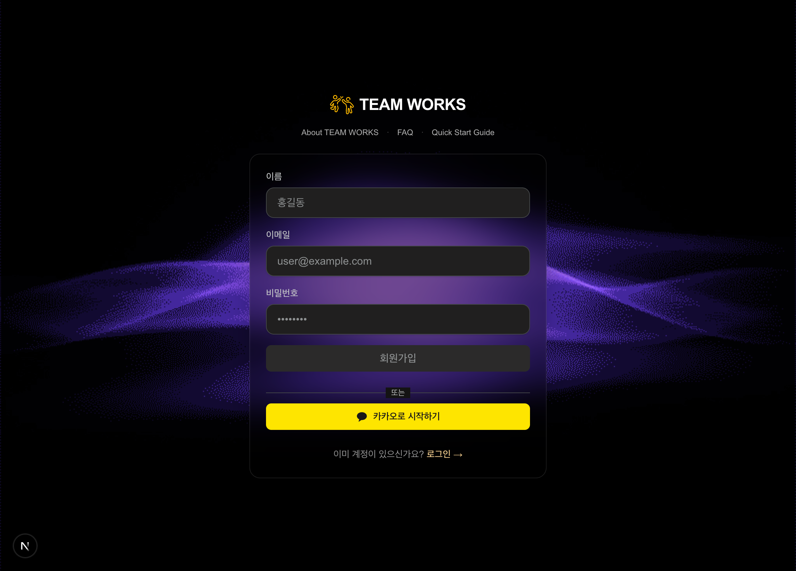
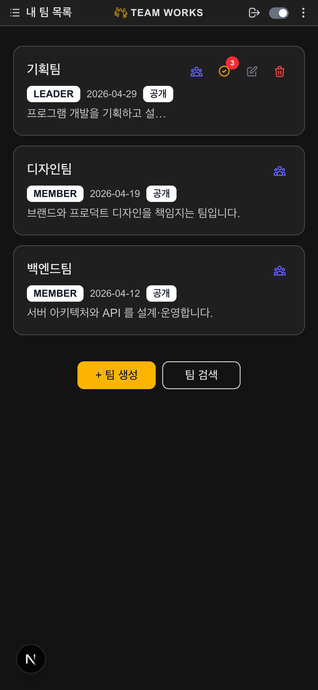
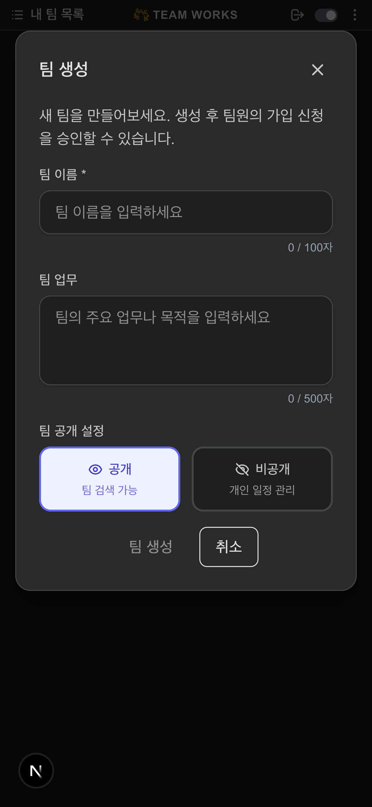
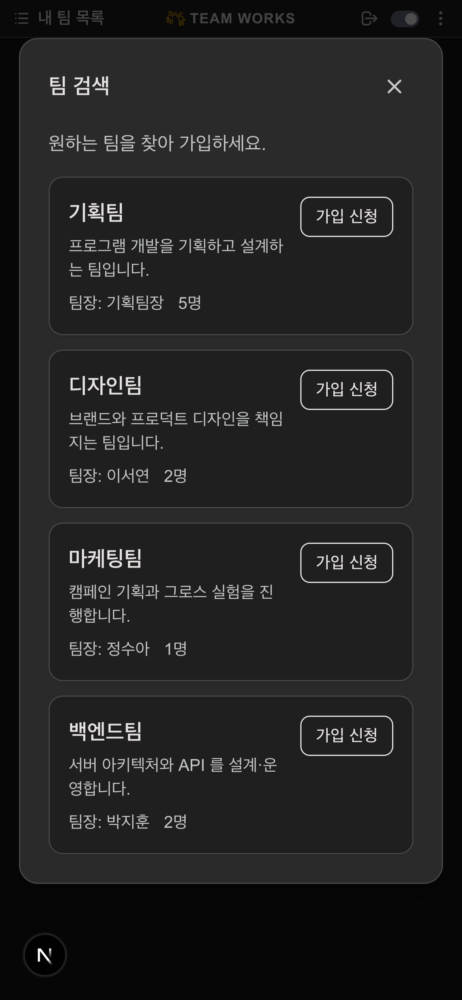
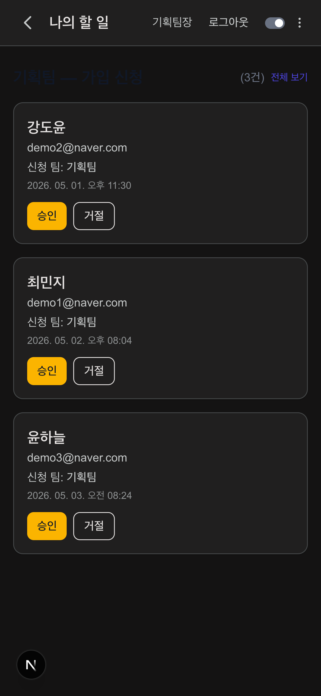
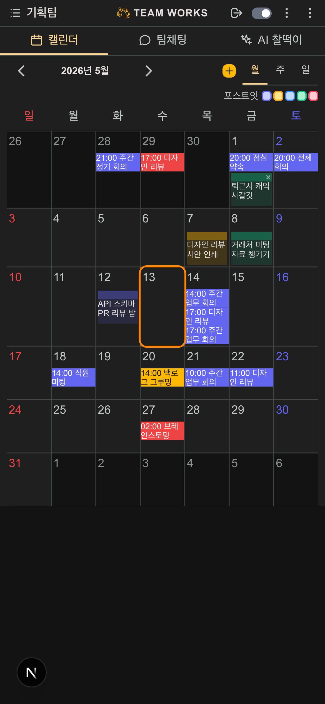
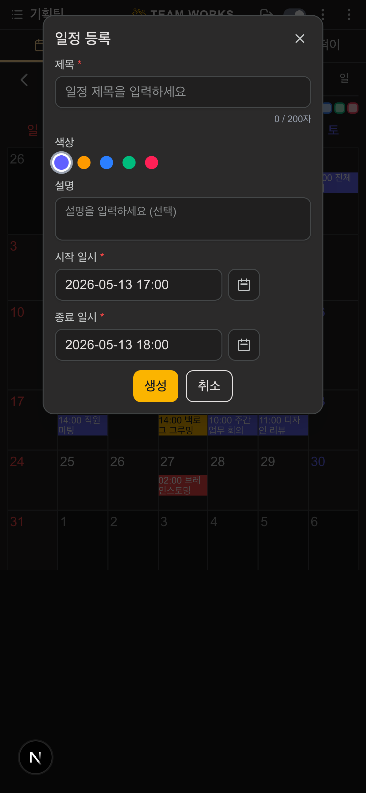
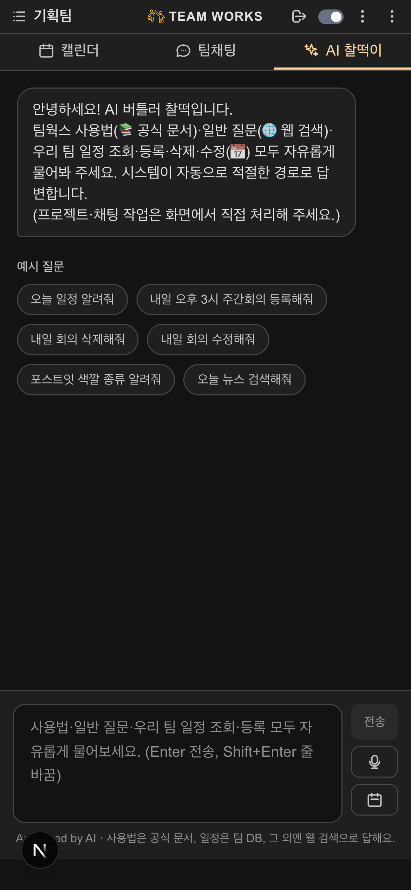
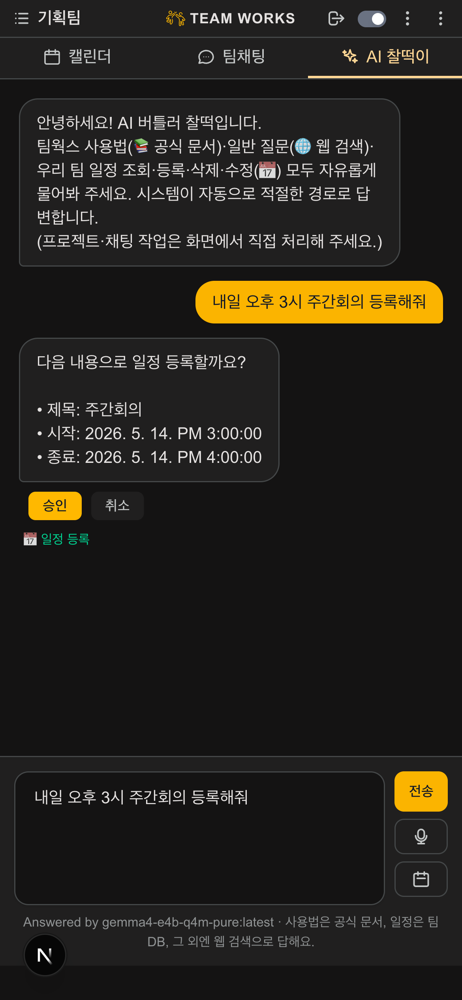

처음 사용자를 위한 5분 가이드
새 계정을 만들고, 팀을 꾸리거나 기존 팀에 가입하는 전 과정.
웹브라우저로 http://teamworks.my 접속 → 회원가입 화면에서 이메일·비밀번호 입력 후 가입. 이후 로그인하면 내 팀 목록 화면으로 이동합니다.

처음이라면 회원가입 → 링크로 이동:

로그인 직후 만나는 첫 화면. 내가 속한 팀들이 카드로 나타납니다. 처음이면 비어 있고, 하단 두 버튼으로 시작합니다.

새 팀을 만들 때 입력:

이미 만들어진 공개 팀에 들어가려면 팀 검색 버튼. 팀 이름으로 검색하고 가입 신청을 누르면 신청이 팀장에게 전달됩니다.

내가 팀장인 팀에 가입 신청이 들어오면 카드 우측에 빨간 배지(숫자)가 표시됩니다. 클릭하면 나의 할 일 화면이 열리고, 신청자별로 승인·거절 버튼이 나옵니다.

팀 화면 → 캘린더에서 직접 입력하는 기본 방법.
내 팀 목록에서 팀 카드를 누르면 팀 화면이 열립니다. 모바일에서는 상단 탭으로 캘린더 / 팀채팅 / AI 찰떡이를 전환합니다.

캘린더 상단의 노란색 + 일정 등록 버튼을 누르면 모달이 열립니다. 필수 항목:

하단 생성 버튼을 누르면 캘린더에 즉시 표시되고, 팀원 모두에게 보입니다. 내가 만든 일정만 내가 수정·삭제 가능합니다.
버튼·필드 안 누르고 말 한 줄로 끝내기.
팀 화면 상단의 AI 찰떡이 탭을 누르면 입력창과 예시 질문이 나옵니다.

입력창에 일상 한국말로 적기:
한 줄로 끝나면 곧바로 미리보기 카드가 표시됩니다. 정보가 부족하면 찰떡이가 되묻습니다 (예: "몇 시에 잡을까요?", "어떤 일정인가요?").

미리보기 내용을 확인하고 승인 버튼을 눌러야 실제로 등록됩니다. 잘못 등록될 일이 없어요. 마음에 안 들면 취소.
개떡같이 물어도 찰떡같이 답해줍니다.